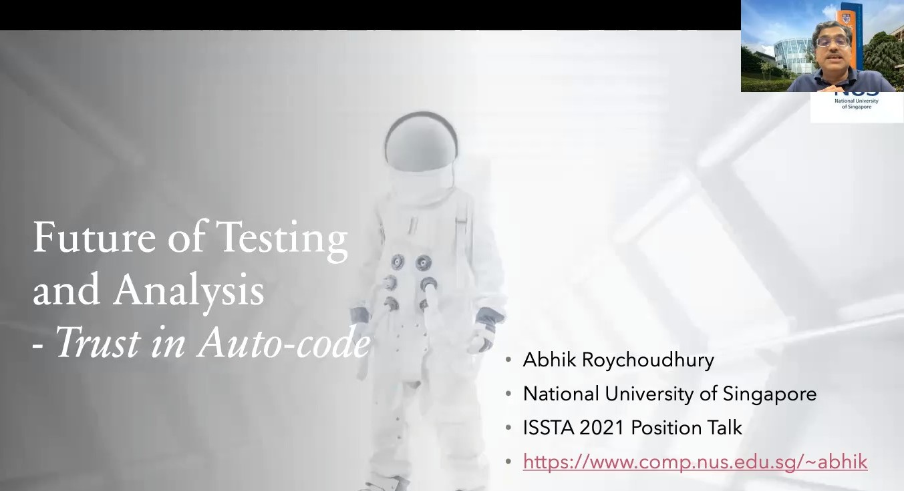
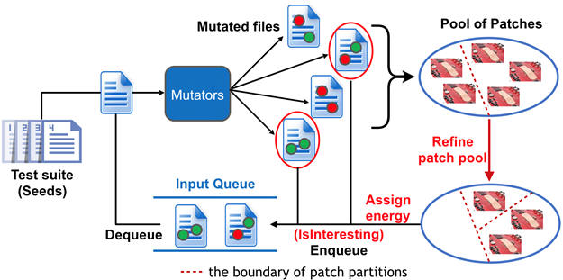

News
2022:
IEEE TCSE New Directions Award 2022 recognises work on symbolic execution for test generation and program repair (Cristian Cadar and Abhik Roychoudhury)
2021: Thanks to Oracle for their generous donation to further our research on program repair!
2021: Position statement on Program Repair in ISSTA 2021 Panel: 30 Years of Testing and Analysis.
2021: ISSTA21 paper on automated repair of Linux code receives Best Artifact Award.
2021:Special issue (Editor's note) on program repair, in IEEE Software.
2021: CPR tool on Concolic Program Repair (see paper) released.
December 2019:
Article
and Video co-authored on "Automated Program Repair" appeared in Communications of the ACM.
March 2019:
Sergey Mechtaev is awarded the 2019 ACM SIGSOFT Outstanding Doctoral Dissertation Award for his PhD thesis on Semantic Program Repair.
Jan 2017:
Dagstuhl
Seminar on Automated Program Repair held, see website.
2016:
Angelix and SemFix tool released, see website.
Views

Viewpoint capturing summary of the field: accompanying Communications of ACM 2019 article.

Forward-looking view on automatically generated code: ISSTA 2021 Panel on 30 years of Testing and Analysis.
Key works
SemFix: Program Repair via Semantic Analysis ( pdf )
Hoang D.T. Nguyen, Dawei Qi, Abhik Roychoudhury, Satish Chandra
ACM/IEEE International Conference on Software Engineering (ICSE) 2013.
Angelix: Scalable Multiline Program Patch Synthesis via Symbolic Analysis ( pdf )
Sergey Mechtaev, Jooyong Yi, Abhik Roychoudhury
ACM/IEEE International Conference on Software Engineering (ICSE) 2016.
DirectFix: Looking for Simple Program Repairs ( pdf )
Sergey Mechtaev, Jooyong Yi, Abhik Roychoudhury
ACM/IEEE International Conference on Software Engineering (ICSE) 2015.
Automated Program Repair ( PDF , Video)
Claire Le Goues, Michael Pradel, Abhik Roychoudhury
Communications of the ACM (CACM), 62(12), December 2019.
Concolic Program Repair ( PDF, Tool, Video)
Ridwan Shariffdeen, Yannic Noller, Lars Grunske, Abhik Roychoudhury
42nd ACM SIGPLAN Conference on Programming Language Design and Implementation (PLDI) 2021.
Tech
(i) Angelix tool from ICSE16 paper [ For the SemFix distribution, click here ]

(ii) Fix2Fit tool from ISSTA19 paper

(iii) Concolic Program Repair or CPR tool from PLDI21 paper

(iv) FixMorph tool for repairing Linux code, from ISSTA21 paper.
Members
Abhik Roychoudhury (Faculty member) Visit website
Ilya Sergey (Faculty member) Visit website
Wei-Ngan Chin (Faculty member) Visit website
Gregory James Duck (Research Assistant Professor) Website
Yannic Noller (Research Assistant Professor) Visit website

Andreea Costea (Postdoc) Website
Umair Z. Ahmed (Postdoc affiliate), Website
Ridwan Shariffdeen (PhD student) Website
Zhiyu Fan (PhD student) Website
Yuntong Zhang (PhD student & Research Assistant)
Publications
[Book]
Program Repair (Available on request)
Xiang Gao, Yannic Noller, Abhik Roychoudhury
Synthesis Lectures on Software Engineering, Morgan Claypool Publishers, 2022.
Publications
[ISSTA]
Program Vulnerability Repair via Inductive Inference ( PDF )
Yuntong Zhang, Xiang Gao, Gregory J. Duck, Abhik Roychoudhury
ACM International Symposium on Software Testing and Analysis (ISSTA) 2022.
[TOSEM]
Verifix: Verified Repair of Programming Assignments ( PDF )
Umair Z. Ahmed, Zhiyu Fan, Jooyong Yi, O Al-Bataineh, Abhik Roychoudhury
ACM Transactions on Software Engineering and Methodology (TOSEM), To appear (2022).
[ICSE22]
Trust Enhancement Issues in Program Repair ( PDF )
Yannic Noller, Ridwan Shariffdeen, Xiang Gao, Abhik Roychoudhury
IEEE/ACM 44th International Conference on Software Engineering (ICSE) 2022.
[OOPSLA21]
APIfix: Output-oriented Program Synthesis for Combating Breaking Changes in Libraries ( PDF )
Xiang Gao, Arjun Radhakrishna, Gustavo Soares, Ridwan Shariffdeen, Sumit Gulwani, Abhik Roychoudhury
ACM SIGPLAN Object-Oriented Programming Systems Languages and Applications (OOPSLA) 2021.
[IEEE-SW21]
Automatic Program Repair ( PDF )
Claire Le Goues, Michael Pradel, Abhik Roychoudhury, Satish Chandra
IEEE Software, 38(4), 22-27, 2021, Special Issue on Program Repair (Editor's note).
[ISSTA21]
Automated Patch Backporting in Linux ( PDF )
Ridwan Shariffdeen, Xiang Gao, Gregory J Duck, Shin Hwei Tan, Julia Lawall, Abhik Roychoudhury
ACM SIGSOFT International Symposium on Software Testing and Analysis (ISSTA) 2021. Distinguished artifact award.
[VMCAI21]
Automated Repair of Heap-manipulating Programs using Deductive Synthesis (PDF)
[PLDI21]
Concolic Program Repair ( PDF , Tool , Video )
Ridwan Shariffdeen, Yannic Noller, Lars Grunske, Abhik Roychoudhury
42nd ACM SIGPLAN Conference on Programming Language Design and Implementation (PLDI) 2021.
[ASIACCS 21]
Localizing Vulnerabilities Statistically From One Exploit ( PDF )
Shiqi Shen, Aashish Kolluri, Zhen Dong, Prateek Saxena, Abhik Roychoudhury
16th ACM ASIA Conference on Computer and Communications Security (ASIACCS) 2021. Best paper award.
[TOSEM21]
Automated Patch Transplantation ( PDF )
Ridwan Shariffdeen, Shin Hwei Tan, Mingyuan Gao, Abhik Roychoudhury
ACM Transactions on Software Engineering and Methodology (TOSEM), 30(1), pages 1-36, 2021.
[TOSEM21]
Beyond Tests: Program Vulnerability Repair via Crash Constraint Extraction ( PDF )
Xiang Gao, Bo Wang, Gregory J. Duck, Ruyi Ji, Yingfei Xiong, Abhik Roychoudhury
ACM Transactions on Software Engineering and Methodology (TOSEM), To appear (2021).
[ESOP20]
Concise Read-Only Specifications for Better Synthesis of Programs with
Pointers [PDF, GitHub , video ]
Andreea Costea, Amy Zhu, Nadia Polikarpova, and Ilya Sergey.
European Symposium on Programming ESOP 2020: 141-168
[NeurIPS20]
Synthesizing Tasks for Block-based Programming (PDF )
Umair Z. Ahmed, Maria Christakis, Aleksandr Efremov, Nigel Fernandez, Ahana Ghosh, Abhik Roychoudhury, Adish Singla
Thirty-fourth Conference on Neural Information Processing Systems (NeurIPS), 2020.
[TOSEM20]
Smart Contract Repair ( PDF )
Xiao Liang Yu, Omar Al-Bataineh, David Lo, Abhik Roychoudhury
ACM Transactions on Software Engineering and Methodology (TOSEM), 29(4),
October 2020.
(arxiv Report December 2019, Accepted May 2020.)
[PLDI20]
Binary Rewriting without Control Flow Recovery( PDF)
Gregory J Duck, Xiang Gao, Abhik Roychoudhury
41st ACM SIGPLAN conference on Programming Language Design and Implementation (PLDI) 2020.
[CACM19]
Automated Program Repair ( PDF , Video)
Claire Le Goues, Michael Pradel, Abhik Roychoudhury
Communications of the ACM (CACM), 62(12), December 2019.
[SCIS19]
Automated Program Repair: A step towards software automation ( Pre-print)
Abhik Roychoudhury and Yingfei Xiong
Science China Information Series (SCIS), 62(10), 2019.
[VMCAI19]
Automatic Program Repair using Formal Verification and Expression Templates ( PDF )
Thanh-Toan Nguyen, Quang-Trung Ta, and Wei-Ngan Chin
International Conference on Verification, Model Checking, and Abstract Interpretation (VMCAI) 2021.
[ASE19]
Re-factoring based Program Repair applied to Programming Assignments ( PDF )
Yang Hu, Umair Z. Ahmed, Sergey Mechtaev, Ben Leong, Abhik Roychoudhury
34th IEEE/ACM International Conference on Automated Software Engineering (ASE) 2019.
[ISSTA19]
Crash-avoiding Program Repair ( PDF )
Xiang Gao, Sergey Mechtaev, Abhik Roychoudhury
ACM SIGSOFT International Symposium on Testing and Analysis (ISSTA) 2019.
[TOSEM18]
Test-equivalence Analysis for Automatic Patch Generation ( PDF )
Sergey Mechtaev, Xiang Gao, Shin Hwei Tan, Abhik Roychoudhury
ACM Transactions on Software Engineering and Methodology (TOSEM), 27(4), October 2018.
[ESEC-FSE18]
Symbolic Execution with Existential Second-order Constraints ( PDF )
Sergey Mechtaev, Alberto Griggio, Alessandro Cimatti, Abhik Roychoudhury
ACM Symposium on Foundations of Software Engineering (FSE) 2018.
[ICSE18]
Semantic Program Repair Using a Reference Implementation ( PDF )
Sergey Mechtaev, Manh-Dung Nguyen, Yannic Noller, Lars Grunske, Abhik Roychoudhury
ACM/IEEE 40th International Conference on Software Engineering (ICSE) 2018.
[ICSE18]
Repairing Crashes in Android Apps ( PDF )
Shin Hwei Tan, Zhen Dong, Xiang Gao, Abhik Roychoudhury
ACM/IEEE 40th International Conference on Software Engineering (ICSE) 2018.
[EmSE18]
A Correlation Study between Automated Program Repair and Test-suite Metrics ( PDF )
Jooyong Yi, Shin Hwei Tan, Sergey Mechtaev, Marcel Böhme, Abhik Roychoudhury
Empirical Software Engineering Journal, 23(5), pages 2948-2979, 2018.
[ESEC-FSE18]
A Feasibility Study of Using Automated Program Repair for Introductory Programming Assignments ( PDF )
Jooyong Yi, Umair Z. Ahmed, Amey Karkare, Shin Hwei Tan, Abhik Roychoudhury
ACM SIGSOFT International Symposium on Foundations of Software Engineering (FSE) 2017.
[ICSE-Poster17]
CodeFlaws: A Programming Competition Benchmark for Evaluating Automated Program Repair Tools (WWW)
Shin Hwei Tan, Jooyong Yi, Yulis, Sergey Mechtaev, Abhik Roychoudhury
ACM/IEEE International Conference on Software Engineering (ICSE) 2017, Poster-paper.
[ESEC-FSE16]
Anti-patterns in Search-based Program Repair (pdf)
Shin Hwei Tan, Hiroaki Yoshida, Mukul Prasad, Abhik Roychoudhury
ACM SIGSOFT International Symposium on Foundations of Software Engineering (FSE) 2016.
[ICSE16]
Angelix: Scalable Multiline Program Patch Synthesis via Symbolic Analysis ( pdf )
Sergey Mechtaev, Jooyong Yi, Abhik Roychoudhury
ACM/IEEE International Conference on Software Engineering (ICSE) 2016.
[ICSE15]
DirectFix: Looking for Simple Program Repairs ( PDF )
Sergey Mechtaev, Jooyong Yi, Abhik Roychoudhury
ACM/IEEE International Conference on Software Engineering (ICSE) 2015.
[ICSE15]
Relifix: Automated Repair of Software Regressions ( PDF )
Shin Hwei Tan, Abhik Roychoudhury
ACM/IEEE International Conference on Software Engineering (ICSE) 2015.
[ICSE13]
SemFix: Program Repair via Semantic Analysis ( pdf )
Hoang D.T. Nguyen, Dawei Qi, Abhik Roychoudhury, Satish Chandra
ACM/IEEE International Conference on Software Engineering (ICSE) 2013.
Alumni

{kind=link}
{kind=link}
{kind=link}
{kind=link}
{kind=link}
{kind=link}
{kind=link}
{kind=link}
{kind=link}
{kind=link}
{kind=link}